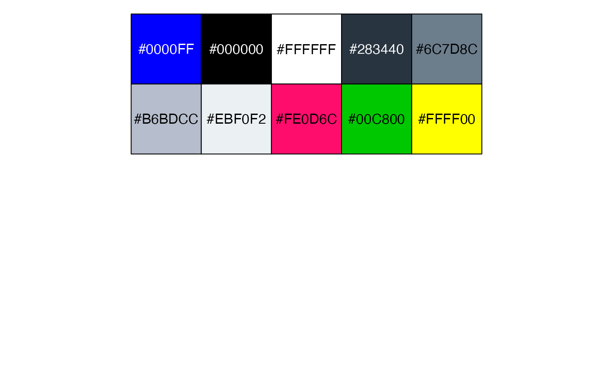
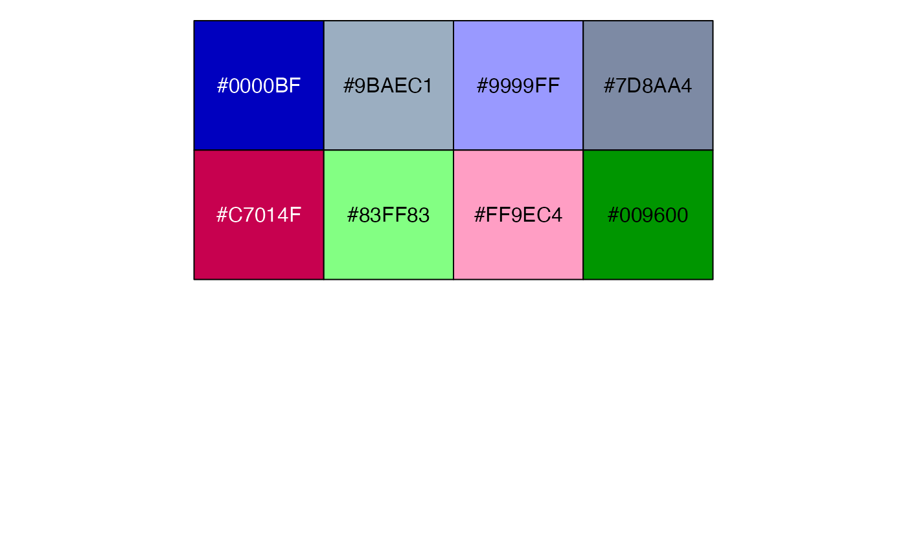
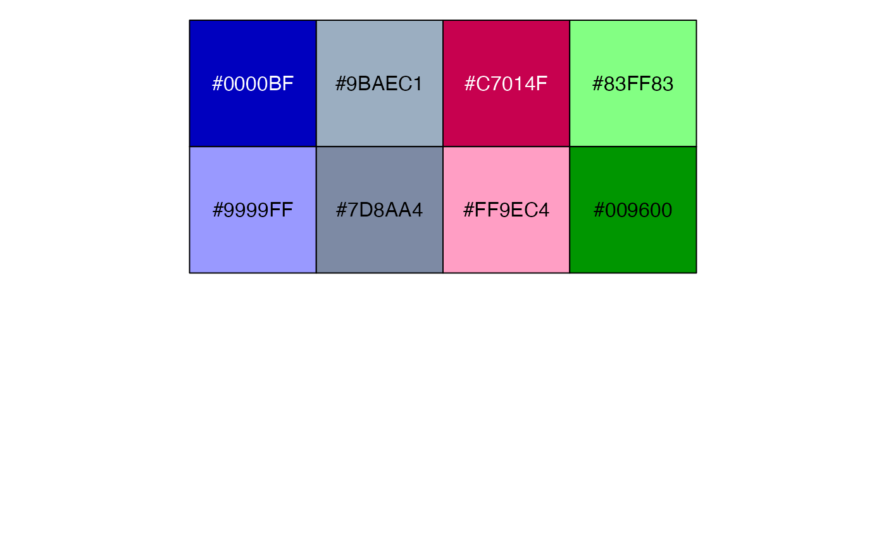
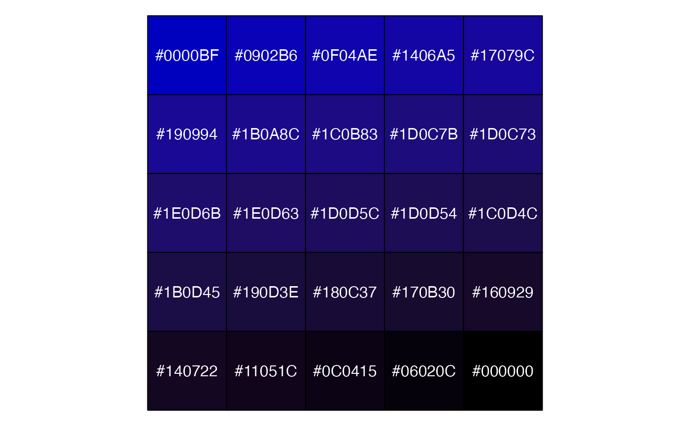
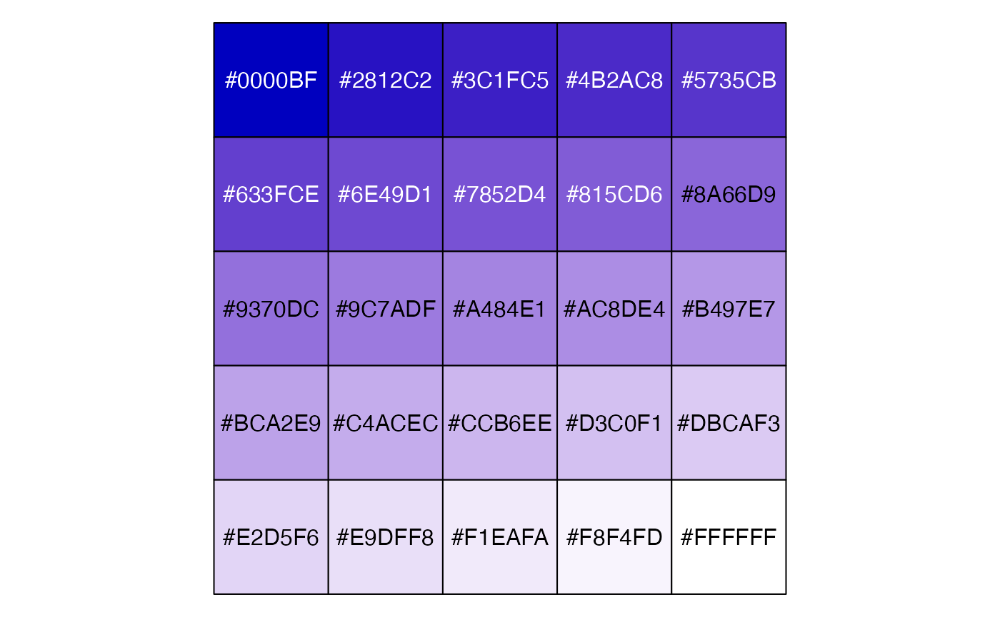
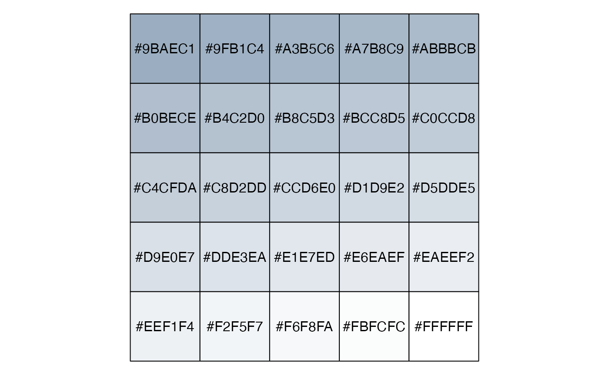
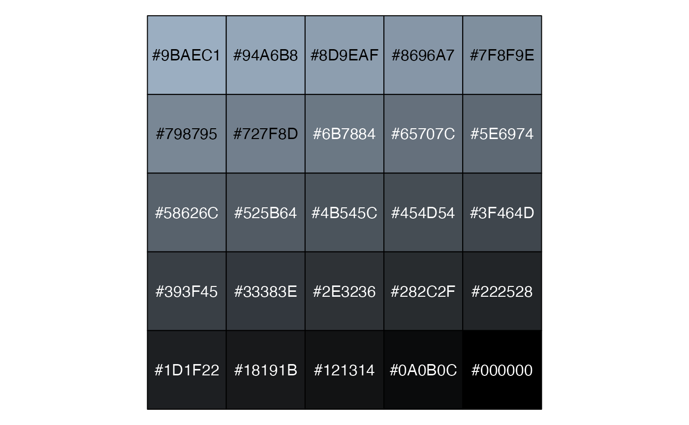
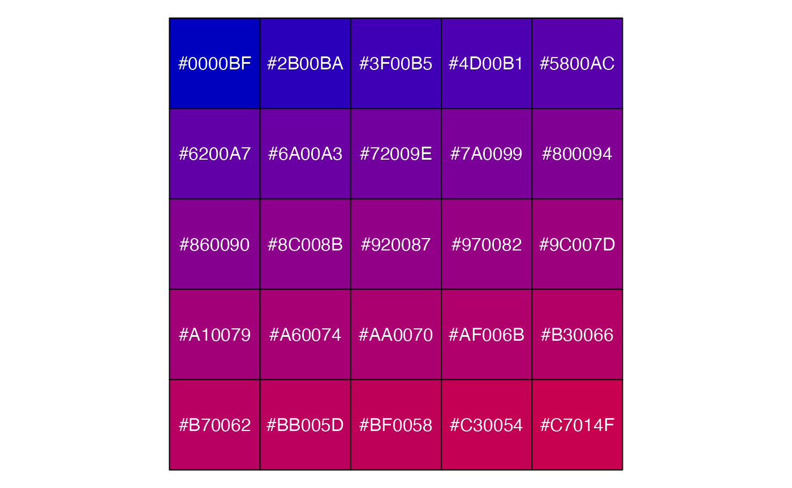
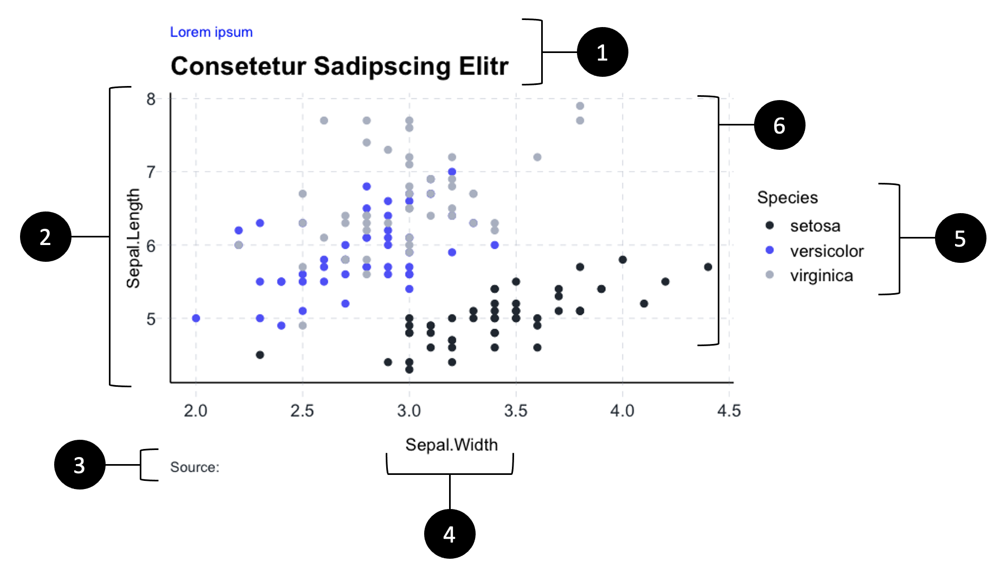

General
The purpose of this template is to enhance the consistency of our graphics across the company. Also, it should save you a bit of time since the structure and appearance of some elements are defined in here.
Color palettes
## [1] "Statworx Highlights"
## [1] "Statworx standard 1"
## [1] "Statworx standard 2"
## [1] "Statworx sequentiell from blue to black"
## [1] "Statworx sequentiell from blue to white"
## [1] "Statworx sequentiell from grey to white"
## [1] "Statworx sequentiell from grey to black"
## [1] "Statworx sequentiell from blue to red"
Theme basic
The themes proposed in this section will help to ensure a coherent structure of your graphics. The themes are inspired by those of ggplot. The differences among the themes is reflected in the choice of the axis colors and the grid-lines. Besides the differences there are some standards defined across all themes. Also, if appropriate, the individual themes also offer the possibility to switch to a dark mode.
The theme independent components include:
1. Font: Arial
2. Font size: subtitle 18pt (action title), title 10pt (content), axis title 12pt,
axis text 12pt
3. Left-Alignment of both titles
High-level structure of a plot
In order to achieve a uniform structure of the plots, some components should be included if possible. These components are marked in the diagram below. In some cases it could make sense to deviate from this structure, some examples are displayed in the Gallery below.

1. Meaningful titles (mirrors the statworx PowerPoint slides)
2. Choose an appropriate scale for the y- and x-axis.
3. If necessary provide a source of the data
4. Label the axis
5. Include a legend
6. Stick to colors defined in the statworx palettes and Design Guide